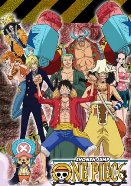

Una historia épica de piratas, donde narra la historia de "Monkey D. Luffy" quien cuado tenia 7 años, comió accidentalmente una "Akuma no mi"(Futa del diablo) la cual le dio poderes de goma. Por otra parte "Gol D. Roger" conocido como "El rey de los Piratas" quien fuera ejecutado por la Marine, habló antes de morir, acerca de su famoso tesoro "One Piece" escondido en la "Gran line". Esta noticia desato la gran era de la piratas lanzando a incontables piratas a ese lugar, en busca de "One Piece" el tesoro perdido. Diez años después, Luffy inspirado en "Gol D. Roger" y un pirata de nombre Akagami no Shanks (Shanks el pelirrojo) se convierte en pirata deseando ser el próximo "Rey de los Piratas" y zarpar para conocer amigos y tener aventuras con ellos, teniendo como meta encontrar el "One Piece".